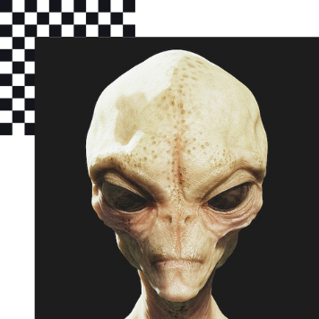
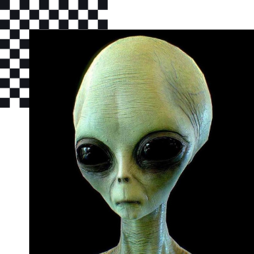
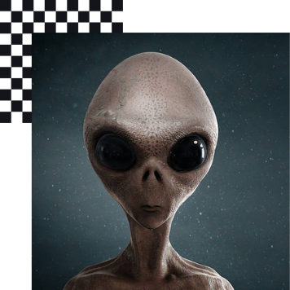
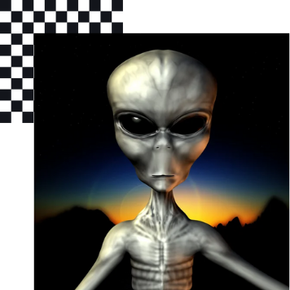

Thehmuks Hincens
Legal Ambassador of Atlaya-Mirbukia Tuloska Galaxy Ring
As the main venue for new media, art production in Kores, Nabi
promotes cross-disciplinary collaboration and understanding among
science technology, humanities, and the arts.
Qegmieds Baulnets
Representative of the Parkydan Cosmic Planetary Council of Ramyda
As the main venue for new media, art production in Kores, Nabi
promotes cross-disciplinary collaboration and understanding among
science technology, humanities, and the arts.

Straldak Qhath
Adjunct Councelor of Intergalactic Affairs of the Gunkonian Galaxy
Organization
As the main venue for new media, art production in Kores, Nabi
promotes cross-disciplinary collaboration and understanding among
science technology, humanities, and the arts.

Ekread Xaehmol
President of the United Federations of Rajumen-Tritzion
Organiation of Solar Systems
As the main venue for new media, art production in Kores, Nabi
promotes cross-disciplinary collaboration and understanding among
science technology, humanities, and the arts.

Golgrax Scuds
Militar Attache to the National Interplanetary Association of
KrikYi Solar Conjunctions
As the main venue for new media, art production in Kores, Nabi
promotes cross-disciplinary collaboration and understanding among
science technology, humanities, and the arts.

Islax Ehmuds
President of Inter-Civilization Affairs of Space Sector Alpha
Quanine VII
As the main venue for new media, art production in Kores, Nabi
promotes cross-disciplinary collaboration and understanding among
science technology, humanities, and the arts.